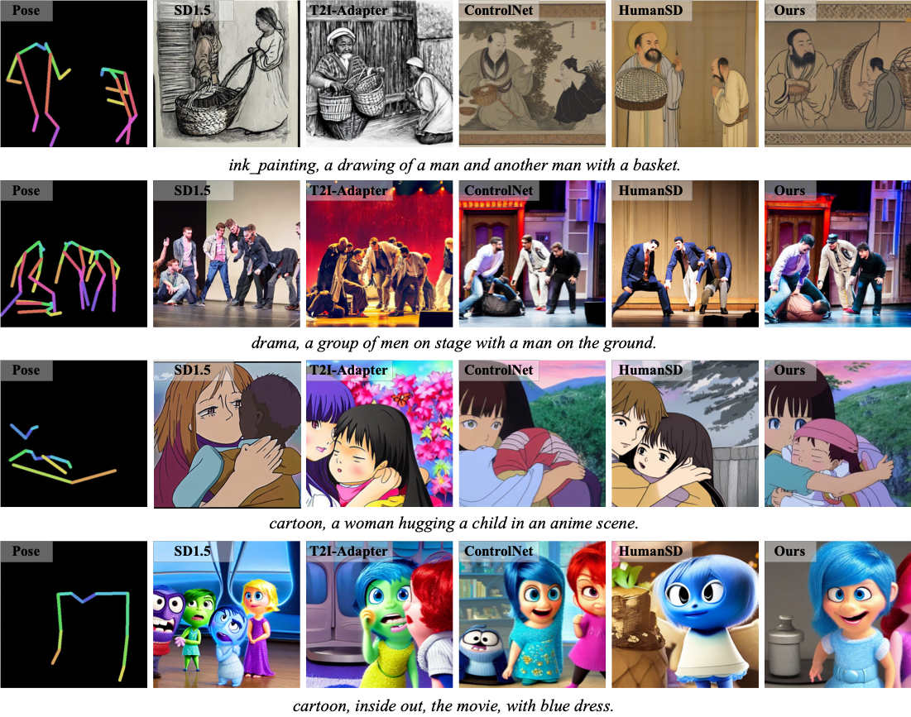
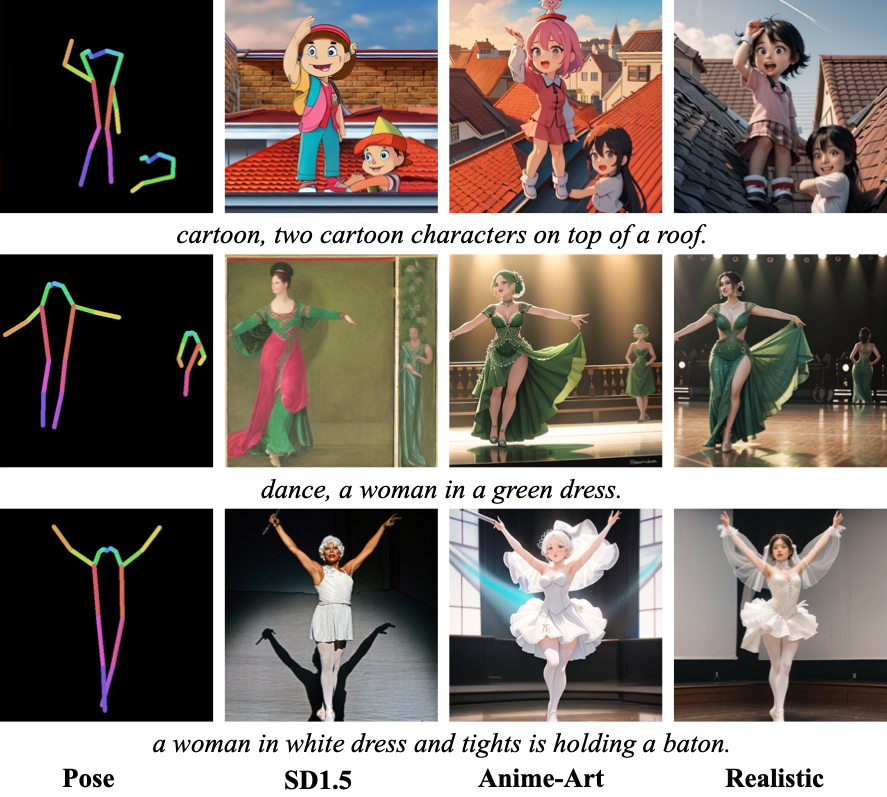
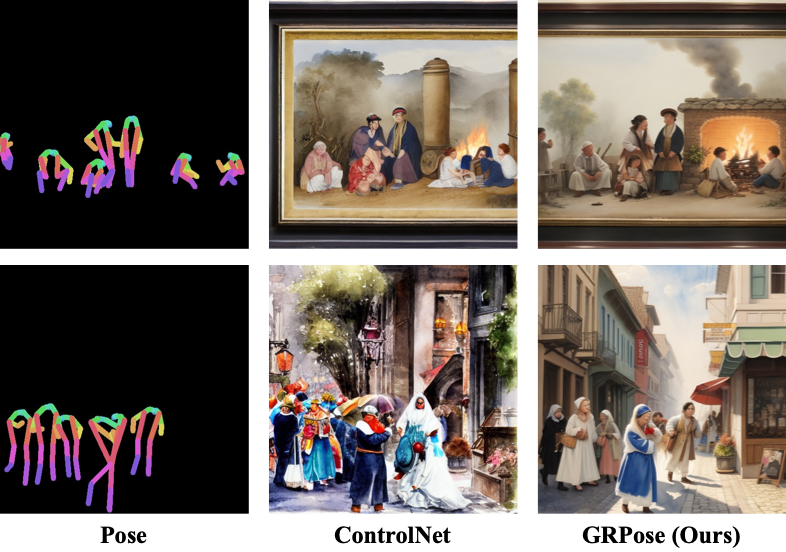

GRPose generates results by better aligning with pose prior and scaling outputs to 512 × 512 pixels. The first row compares it with ControlNet while the second row visualizes the pose alignment across different base models.
ControlNet exhibits pose alignment in certain body parts such as arms and incorrect actions like handshakes.
Abstract
Recent methods using diffusion models have made significant progress in human
image generation with various additional controls such as pose priors.
However, existing approaches still struggle to generate high-quality images with
consistent pose alignment, resulting in unsatisfactory outputs. In this paper,
we propose a framework delving into the graph relations of pose priors to provide
control information for human image generation.
The main idea is to establish a graph
topological structure between the pose priors and latent representation of diffusion
models to capture the intrinsic associations between different pose parts.
A Progressive Graph Integrator (PGI) is designed to learn the spatial relationships of
the pose priors with the graph structure, adopting a hierarchical strategy within an
Adapter to gradually propagate information across different pose parts.
A pose perception loss is further introduced based on a pretrained pose estimation
network to minimize the pose differences. Extensive qualitative and quantitative
experiments conducted on the Human-Art and LAION-Human datasets demonstrate that
our model achieves superior performance, with a 9.98% increase in pose average precision
compared to the latest benchmark model.
Overview of GRPose
Our aim is to generate high-quality human images conditioned on pose priors.
Our proposed GRPose consists of three main components: Diffusion Pipeline,
Graph Pose Adapter and Pose Perception Loss.
Within the entire framework, the Graph Pose Adapter is a trainable component that encodes the pose condition
into a graph structure and integrates it into the Adapter through a hierarchical structure.
At the beginning of each encoder layer in the Adapter, the encoded pose and the current latent representation
are fed into the Progressive Graph Integrator (PGI) to capture the topological relationships between different
pose parts through graph learning. This process fine-tunes the Adapter to convey control signals to the SD model,
producing the synthesized image. Additionally, to further encourage alignment of the synthesized output with pose
priors, the pose perception loss is formulated using a pre-trained pose estimation network to quantify the pose
differences between outputs and the original images.
Overview of Graph Relation Pose (GRPose). It consists of Diffusion Pipeline, Graph Pose Adapter and Pose Perception Loss.
The Pose Encoder uses a coupling structure in alongside the Progressive Graph Integrator (PGI) to capture graph relationships between different pose parts. The Pose Perception Loss adopts a pre-trained pose estimation network to regularize the pose alignment in the feature space.
Details of Progressive Graph Integrator (PGI). The pose prior \( x_p \) and
latent representation \( x_l \) are gridded to construct graphs \( \mathcal{G}_p \)
and \( \mathcal{G}_p \) respectively, where GCNs are employed to fuse and update the information.
Visualization of Methods

Visual comparison of ours and other methods. The samples are from the Human-Art dataset, with each row representing a sample along with its corresponding pose and prompt. Our GRPose, HumanSD, ControlNet, and T2I-Adapter were provided with both a prompt and a pose, while SD1.5 was provided with only a prompt. Our model achieved outstanding results in visual quality and pose alignment.

Comparison of different base diffusion models for our GRPose. We compared SD1.5, Anime Art and Realistic models of different styles. GRPose effectively enhances each model with superior pose alignment.

Results of Multi-Pose Generation. Our model outperforms ControlNet in generating multiple poses.
Quantitative Results
Results on Human-Art and LAION-Human datasets. The best results and the second best results are marked in green and blue respectively. Results marked with asterisk (*) are evaluated on the released models.
BibTeX
@article{yin2024grpose,
title={Grpose: Learning graph relations for human image generation with pose priors},
author={Yin, Xiangchen and Di, Donglin and Fan, Lei and Li, Hao and Wei, Chen and Gou, Xiaofei and Song, Yang and Sun, Xiao and Yang, Xun},
journal={arXiv preprint arXiv:2408.16540},
year={2024}
}